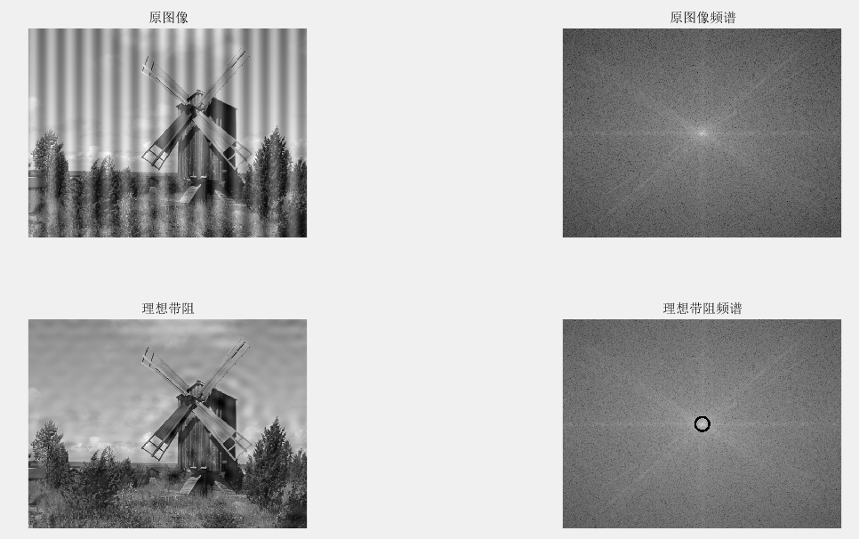
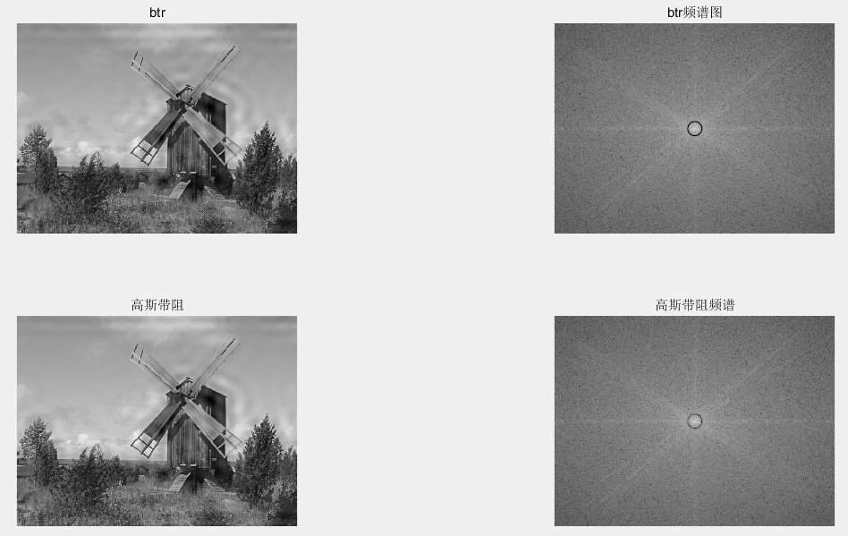

最近做了数字图像处理的实验，通过频率域上的带阻滤波器和自适应中值滤波器来处理图像的条纹干扰和椒盐噪声，效果也是挺好的，take a note~
对于去除条纹干扰，可以在频率域上使用带阻滤波器来处理，常用的带阻滤波器有理想带阻滤波器、巴特沃斯带阻滤波器和高斯带阻滤波器，设计思路如下：
首先对原图像进行傅里叶变换，然后通过fftshift()函数将零频分量移动到数组中心,重新排列傅里叶变换。
1 2 3 4 5 6 7 8 9 10 11 f=imread(str_path); figure ,subplot(2 ,2 ,1 ),imshow(f); title('原图像' ); F=fft2(f); [M, N]=size (f); f=double(f); fc=fftshift(F); s=log (1 +abs (fc)); subplot(2 ,2 ,2 ),imshow(s,[]); title('原图像频谱' );
1 2 3 4 5 6 7 8 9 10 11 12 13 14 15 16 [u,v]=dftuv(M,N); d1=sqrt (u.^2 +v.^2 ); w=5 ; D0=15 ; ba= d1<(D0-w/2 ) | d1>(D0+w/2 ); H=double(ba); n=3 ; H = 1. /(1 + (w*d1./(d1.^2 -D0^2 )).^(2 *n)); H = 1 -exp (-1 /2 *(((d1.^2 )-D0^2 )./(d1*w)).^2 ); `
1 2 3 4 5 6 7 8 g=real (ifft2(H.*F)); subplot(2 ,2 ,3 ),imshow(g,[]); title('理想带阻' ); F=fft2(g); fc=fftshift(F); s=log (1 +abs (fc)); subplot(2 ,2 ,4 ),imshow(s,[]); title('理想带阻频谱' );
效果如下：

在处理椒盐噪声的过程中，使用了自适应中值滤波器，自适应中值滤波思路如下。
首先我们定义一个滤波窗口的最大值Rmax。
为了方便处理边界像素，对图像进行拓展，并对拓展的部分使用与图像中的图像进行填充。
初始化窗口大小为1，计算出当前窗口中的像素的最大值和最小值，然后与当前窗口的中值进行比较，如果该中止在最大值与最小值之间，那么可以说明该像素点不是噪声点，所以可以使用。
否则的话，就扩大窗口，直到到达最大窗口值。
这时候就是用该窗口的中值来替代该像素值。
不过在实验过程中，发现仅通过一次自适应中值滤波的效果并不是很好，所以将中值滤波写成了一个单独的函数，然后通过多次调用，来增强去除椒盐噪声的效果。
1 2 3 4 5 6 7 8 9 10 11 12 13 14 15 16 17 18 19 20 21 22 23 24 25 26 27 28 29 30 31 32 33 34 35 36 37 38 39 40 function I = myfuc ( img, Rmax ) [m, n]=size (img); imgn=zeros (m+2 *Rmax+1 ,n+2 *Rmax+1 ); imgn(Rmax+1 :m+Rmax,Rmax+1 :n+Rmax)=img(:,:); imgn(1 :Rmax,Rmax+1 :n+Rmax)=img(1 :Rmax,1 :n); imgn(1 :m+Rmax,n+Rmax+1 :n+2 *Rmax+1 )=imgn(1 :m+Rmax,n:n+Rmax); imgn(m+Rmax+1 :m+2 *Rmax+1 ,Rmax+1 :n+2 *Rmax+1 )=imgn(m:m+Rmax,Rmax+1 :n+2 *Rmax+1 ); imgn(1 :m+2 *Rmax+1 ,1 :Rmax)=imgn(1 :m+2 *Rmax+1 ,Rmax+1 :2 *Rmax); I=imgn; for i =Rmax+1 :m+Rmax for j =Rmax+1 :n+Rmax r=1 ; while r~=Rmax W=imgn(i -r:i +r,j -r:j +r); W=sort (W); Imin=min (W(:)); Imax=max (W(:)); Imed=W(uint8((2 *r+1 )^2 /2 )); if Imin<Imed && Imed<Imax break ; else r=r+1 ; end end if Imin<imgn(i ,j ) && imgn(i ,j )<Imax I(i ,j )=imgn(i ,j ); else I(i ,j )=Imed; end end end I = I(Rmax+1 :m+Rmax,Rmax+1 :n+Rmax); end